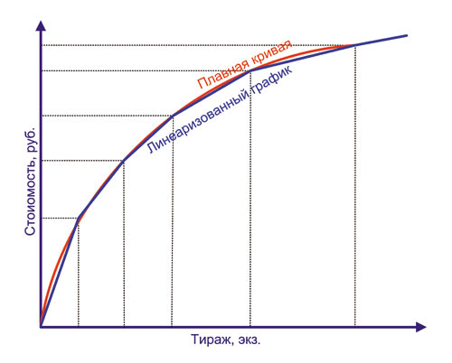
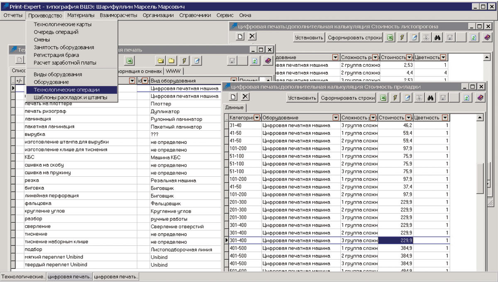
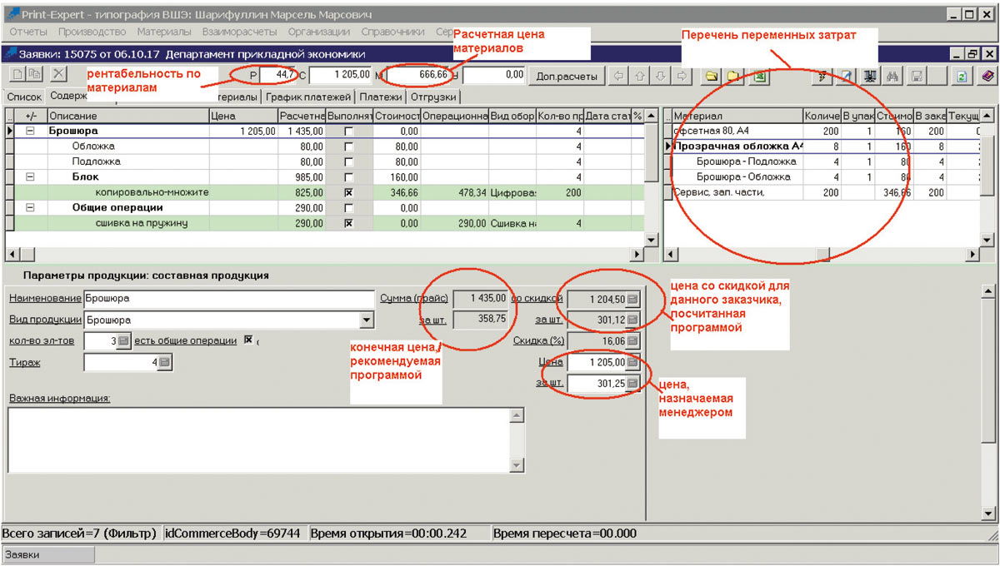
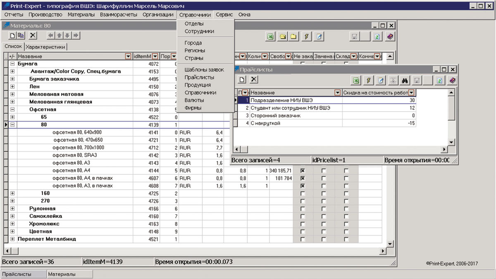

Введение
Многие спрашивают нас о принципе ценообразования, используемом в типографии ВШЭ и способе расчетов, используемых в нашей автоматизированной системе управления. И ответ в этой короткой статье, думаем, будет полезен не только им, но и вообще многим полиграфистам.
Полиграфию, подобно корпускулярноволновой теории света, с одной стороны, можно отнести к производству товаров народного потребления, а с другой — к сфере услуг. И обе эти ипостаси обычно сочетаются в каждом выполненном типографском заказе в разных пропорциях: в зависимости от заказчика, вида, тиража и срока изготовления продукции. Типографии изготавливают вещественные товары, но чаще всего это уникальная печатная продукция, необходимая в определенном количестве к определенному сроку, которую сложно продать другому заказчику в случае отказа от нее первого. Поэтому стандартных подходов к ценообразованию, как, например, в типовом магазине или на фабрике, быть не может. Здесь приходится использовать сложное дифференцированное ценообразование в зависимости от множества условий, начиная от вида изделия и тиража и заканчивая сроками и прежними отношениями с клиентом.
О ценообразовании в полиграфии написано множество объемных книг (можете поискать самостоятельно в Интернете запросом «экономика полиграфического производства»), которые, впрочем, мало что проясняют. Мы не претендуем на звание гуру, и хотели бы лишь простыми словами изложить свой взгляд на эту тему. Принципы ценообразования, используемые на практике российскими типографиями, можно разделить на два основных типа: первые — построенные по рыночному принципу (назовем коротко — по прайслистам), вторые — от затрат на изготовление продукции (по нормам).
В первом случае цены назначаются из анализа локального рынка и существующих предложений конкурентов. Профессиональные экономисты выстроили целые теории с графиками эластичности спроса и предложения и с другими сложными научными терминами. Однако не секрет, что составление прайслистов обычно основывается на опросе и расчете стоимости продукции (через открытые данные в Интернете, по телефону или электронной почте) у аналогичных типографий и назначении цен чуть ниже, чем у основных конкурентов. Считалось, что это и есть «регулировка цены рынком». В итоге, в какойто момент дошло до того, что многие типографии стали работать себе в убыток.
Во втором случае — рассчитываются затраты на производство продукции на конкретном предприятии (с разной степенью точности) и делается абсолютная или относительная наценка для получения заданной прибыли. Не вдаваясь в детали, скажем, что затраты по функциональному признаку могут быть: технологическими (на техпроцессы по изготовлению продукции), на обслуживание (на создание условий производства, оборудование, ремонт, транспорт и т.п.) и управленческими (функционирование управленческого персонала, бухгалтерии и т.п.). В зависимости от объема производства все затраты можно делить на две группы: переменные и постоянные. Переменные — это затраты, непосредственно зависящие от объема производства: на бумагу и расходные материалы, сдельную зарплату рабочих, электроэнергию, транспортные услуги и др. Постоянные — затраты, которые не меняются с изменением объема производства: на амортизацию или аренду зданий и оборудования, страховые взносы, расходы по содержанию зданий, сооружений и оборудования и т.п.
Соответственно, по способу отнесения на себестоимость продукции все затраты подразделяются на прямые и косвенные. Прямые рассчитываются на основе норм, связаны с изготовлением конкретной продукции и непосредственно включаются в ее себестоимость. Косвенные затраты связаны с работой предприятия в целом и не могут быть отнесены на себестоимость конкретной продукции. Они распределяются по отдельным видам продукции или заказам пропорционально объему производства в нормочасах, трудоемкости изготовления продукции, прямой или основной зарплате основных производственных рабочих и другим принципам.
Вот примерный перечень пунктов калькуляции (расчета себестоимости продукции):
Чтобы можно было оценить сложность предстоящих расчетов, добавим, что не все приведенные затраты включаются в расчет себестоимости продукции полностью, некоторые входят частично в рамках установленных пределов, а некоторые, из рациональности, не учитываются совсем. При назначении цен по нормам применяют методы: а) полных затрат, б) возврата инвестиций, в) метод прямых затрат. Метод полных затрат учитывает все затраты и устанавливает отпускную стоимость продукции по системе «затраты плюс фиксированная прибыль». Метод рентабельности инвестиций заключается в том, что предприятие устанавливает отпускную стоимость такой, чтобы она обеспечивала необходимый срок возврата инвестиций. В методе прямых затрат ведется раздельный учет переменных и постоянных расходов, и при калькулировании определяется не полная себестоимость, а только переменные расходы. Формирование отпускной стоимости производится путем добавления к этой расчетной величине суммы, покрывающей постоянные расходы и нормальную прибыль. Метод прямых затрат позволяет учитывать спрос на продукцию и не требует сложного распределения накладных расходов.
Даже для получения цены по наиболее простому методу прямых затрат необходимо рассчитать все переменные затраты и прибавить к ним заданный процент прибыли. Представляете реакцию менеджера типографии, которого бы заставили рассчитать таким способом стоимость 1000 журналов, например?
Как в реальности
Надо сказать, что в реальности приведенные выше способы назначения цен имеют много общего. Прайслисты обычно составляют не индивидуально на каждый тираж определенного вида продукции, а считают сложением стоимости каждой технологической операции, используемой при производстве данной продукции. И стоимость этой операции уже примеряют на рыночный уровень. Учитывая, что технологические операции так или иначе зависят от типа (а значит, функциональных характеристик, потребления ресурсов, стоимости и т.п.) оборудования, величины тиража, сложности приладки и т.п., ценообразование первого типа (по прайслистам) приближается к ценообразованию по нормам. Причем, чем больше факторов учитывает прайслист, тем ближе он будет к классическому расчету цен по нормам. Но переусердствовать в этом тоже нельзя: слишком детализированный прайс окажется сложной и громоздкой конструкцией, неудобной в применении.
На практике российские типографии чаще всего используют достаточно простые формулы для расчета цен отдельных операций, включающие только линейные зависимости: цену приладки и листопрогона, умноженную на тираж. При этом цена приладки включает все постоянные затраты, а цена листопрогона — переменные. Для того чтобы приблизиться к классическому графику падения стоимости единицы печатной продукции приросте его тиража (рис. 1), тираж разделяют на множество диапазонов, и в каждом из них в данной формуле вводят свои коэффициенты. Наиболее продвинутые и не забывшие математику подбирают эти коэффициенты таким образом, чтобы не было разрывов (или скачков цен) на границах выбранных тиражных диапазонов. График изменения цен в зависимости от тиража при этом становится примерно таким, как показано на рис. 1 синей линией. При этом, выигрывая в плавности изменения цен в зависимости от тиража, теряют в усложнении формул расчета, которые становятся неудобными при использовании ручных калькуляторов. Менеджерам потребуется, как минимум, Excel, а лучше отдельная программакалькулятор на компьютере или сайте. Кстати, некоторые «умельцы» умудряются делать свои расчеты на онлайнкалькуляторах конкурентов или назначают цены без расчетов, отталкиваясь от предложений конкурентов на открытых форумах. Разумеется, на таком принципе бизнес строить нельзя.

Рис. 1. Зависимость цены от роста тиража: идеальная и аппроксимированная с помощью прямых
Процесс разбития прайслиста на тиражные диапазоны для каждой технологической операции и задания коэффициентов формул расчета в автоматизированных программах на примере ПО «ПринтЭксперт» показан на рис. 2.

Рис. 2. Ввод расчетных коэффициентов для формул расчета стоимости технологических операций в АСУП «Принт-Эксперт»
Руководители типографий для стабилизации своего бизнеса желают перейти на расчеты по нормам (несмотря на их сложность), но полный отказ от прайсов будет неправильным по причине существования такого понятия, как «рыночная цена». Если расчет по нормам на изготовление продукции окажется ниже уровня рыночной цены, то предприятие просто потеряет дополнительную прибыль и будет выглядеть в глазах коллег более чем странно. Если выше — то придется долго ждать покупателя на свой товар. Поэтому лучшим решением является комбинация этих двух видов ценообразования в одной расчетной программе. Например, выполнять предварительный расчет стоимости заказа по рыночным прайслистам и сразу вычислять расчетную себестоимость продукции. Программа должна автоматически сопоставлять полученные цифры между собой и большее значение показывать менеджеру в качестве рекомендуемой цены. Тогда типография убережется от приема нерентабельного заказа еще на первом этапе.
Использование автоматизации
Для работы со сложными прайслистами требуется автоматизированная программа. Что же касается расчета «по нормам», то он без комплексной автоматизированной системы управления производством (АСУП) вообще невозможен. В этом случае необходимо определить и выбрать не только оптимальные виды технологических операций, но и количество расходуемых материалов и времени на каждую из них, учесть расходы на зарплату, отчисления, прямые общепроизводственные затраты и многое другое.
В качестве конкретного примера рассмотрим типографию «АврораПринт», которая специализируется на производстве бумажных пакетов и календарей. Разработчику ПО «ПринтЭксперт», используемого для АСУП типографии, при внедрении расчета по прайсам пришлось написать тысячи строк кода, чтобы сделать в едином программном окне расчет цен всех видов бумажных пакетов. Ранее же менеджеры делали расчеты «полуручным» способом из десятка экселевских таблиц, учитывавших тип пакета, технологию печати и все возможные виды отделки, тратили на это много времени и регулярно ошибались, теряя прибыль предприятия. Благодаря применению ПО «ПринтЭксперт» расчеты теперь выполняются за считаные минуты, исчез разброс цен от разных менеджеров, повысился имидж и рентабельность работы типографии. Надо отметить, что ввиду обилия ручных операций в типографии «АврораПринт» до сих пор большая часть продукции рассчитывается по автоматизированному прайсу, хотя некоторые нетиповые виды продукции и отделки уже рассчитываются по нормам, благо АСУП это позволяет. Только ускорение расчетов позволило данной типографии увеличить в предновогодний сезон объем загрузки производства почти в два раза. А этот период в конкретной рыночной нише, как и урожай в сельском хозяйстве, полностью обеспечивает жизнеспособность и возможность развития предприятия.
Что касается предварительного расчета по нормам, то он выполняется обычно с небольшим запасом, с предположением, что заказ будет делаться на типовом оборудовании, с закладкой гарантийного запаса материалов на приладку, средней продолжительности выполнения операций и т.п. Иногда для упрощения в него закладывают лишь основные переменные затраты (стоимость используемых расходных материалов, полуфабрикатов, расходы на аутсорсинговые операции, сдельную зарплату рабочих), а все остальное добавляют как фиксированный процент. Даже такая грубая прикидка спасает типографию от убыточных заказов. В качестве примера мы можем привести типовое окно расчета заказа авторефератов в типографии ВШЭ (рис. 3). После того как менеджер заполнил параметры заказа, он видит перечень выполняемых технологических операций, список расходуемых материалов на заказ, расчетную себестоимость заказа по материалам и рекомендуемые цены. Исходя из этих данных, он назначает цену заказа, видя уровень его рентабельности. Назначить цену ниже определенной границы программа ему не даст.

Рис. 3. Расчет цены заказа в АСУП «Принт-Эксперт»
Далее, при выполнении каждого конкретного заказа АСУП должна точно рассчитывать фактические затраты на него, вплоть до стоимости реального количества потраченного материала (по его цене закупки), и в финальном отчете показать фактическую рентабельность работы. Анализируя полученные данные, руководство типографии сможет корректировать коэффициенты своего прайса и/или нормативные данные, приближая тем самым расчетные данные к реальности.
Реализация расчетов
Автор работает в АСУП «Принт Эксперт», которую внедрил сначала в офсетном производстве в типографии МГУ, а затем в цифровой типографии ВШЭ, поэтому примеры будут приводиться на основе его практического опыта. Надо сказать, что это ПО позволяет просто реализовывать расчет огромного спектра полиграфической продукции по прайсам любой сложности и объема. Обычно представители типографии в начале внедрения АСУП просто передают разработчику свои алгоритмы ценообразования, а он закладывает их в программу, чтобы менеджеры могли мгновенно получать стоимость продукции в окне программы «ПринтЭксперт», лишь заполнив все параметры заказа в специально отведенных для этого полях. Процесс обычно занимает 24 недели, независимо от того, как производился расчет в типографии ранее: в блокнотах менеджеров, таблицах Excel, базах Access или других АСУП и калькуляторах.
Расчеты по нормам в «ПринтЭксперт» могут быть реализованы поразному: по нормам выработки и по нормам времени, с учетом затрат на приладки и без них, с учетом брака в учетных единицах и в процентах от тиража, с учетом расхода материалов, которые трудно отнести к конкретным заказам, учетом затрат на сервис, амортизацию, общепроизводственные и хозяйственные расходы и т.п. Он может быть расчетным (предварительным) и фактическим. Результат предварительного расчета сразу отображается в том же окне, что и расчет по прайсу, и дает менеджерам возможность скидок или накруток к цене для конкретного или групповых заказчиков (рис. 4). Например, при предварительном расчете стоимости цифрового заказа в PrintExpert используется понятие учетной стоимости кликконтракта. Это позволяет не усложнять работу менеджера выбором конкретной ЦПМ. В типографии может быть большой парк разных цифровых машин, и менеджер может не знать, на какой из них будет фактически печататься заказ. Когда же заказ выполняется, то печатник отмечает в АСУП конкретную ЦПМ (с вполне определенной стоимостью клика) и фактический расход бумаги. После этого АСУП рассчитывает фактическую стоимость клика и формирует фактическую себестоимость заказа. Сбор этой информации позволяет впоследствии анализировать реальные расходы на цифровую печать и корректировать учетную стоимость кликконтракта.

Рис. 4. Окна для изменения учетной стоимости материалов и скидки для определенных групп клиентов в АСУП «Принт-Эксперт»
В типографии «Вива Стар» в качестве основного используется расчет по прайслистам на каждую технологическую операцию, но дополнительно программа определяет себестоимость по нормам и отображает в окне вилку цен по финансовым показателям, с учетом расходов на амортизацию, лизинг, электричество, заработную плату сотрудникам и т.п. Менеджер вправе самостоятельно назначать цену на продукцию в пределах этой вилки. Если нижняя граница недостаточна для получения заказа, он обращается к руководителю продаж или коммерческому директору предприятия, у которых есть полномочия на назначение меньшего уровня цен.
Следует отметить, что руководители полиграфических предприятий после внедрения АСУП обычно меняют свое ценообразование, отталкиваясь от полученной дополнительной информации. Например, та же «Вива Стар» полностью изменила свою ценовую политику, подняв стоимость непрофильных работ и снизив цены высокорентабельных удобных заказов. В результате, через некоторое время портфель заказов типографии заметно изменился. «Вива Стар» получила максимальные выгоды от своего автоматизированного парка оборудования, в разы увеличила его загрузку, умножила прибыль, сократила персонал и заработала прекрасную репутацию оперативной, производительной и высококачественной журнальной типографии.
Нормы, заложенные в «Принт Эксперт», могут быть легко скорректированы по мере обновления парка оборудования, приобретения навыка и освоения типографией новых технологий. Прайс АСУП также может легко корректироваться (причем, без участия разработчиков) при изменении уровня рыночной конкуренции. Нормы наценки и скидки легко регулируются в зависимости не только от вида продукции, но и от сезона, важности клиента и любых других аспектов, какие только пожелает использовать типография. На рис. 4, например, показаны окна назначения расчетной цены расходных материалов и скидки для определенных категорий заказчиков.
Заключение
Мы живем в век быстрой смены информации и технологий. По словам Дэйва Эванса (Dave Evans) из компании Cisco, сегодня мы знаем лишь 5% того, что нам станет известно через 50 лет. Объем информации в мире ежегодно увеличивается в шесть раз, а объем корпоративных данных — вообще в 50 раз. Что будет дальше — неизвестно. Происходит уже четвертая промышленная революция, полиграфические технологии быстро прошли от высокой до цифровой печати, а в «цифре» — от электрографических систем к струйным УФрешениям. Каждая новая технология приносит собственную экономику производственного процесса. И для четкого понимания ситуации следует контролировать процессы, происходящие на предприятии, а не слепо доверять «руке рынка». Как говорится, каждый в меру понимания работает на себя, а в меру непонимания — на того, кто знает и понимает больше.
Знание того, из чего складывается собственная себестоимость продукции, дает возможность руководителям предприятий принимать грамотные решения, оптимизировать свои бизнеспроцессы и получить большую прибыль. И зачастую видно, что оптимизация — это не только сокращение штата, но и пересмотр норм, производственных технологий, рационального распределения времени, повышение квалификации сотрудников, рациональный расход и учет материалов. Любые маркетинговые действия, направленные на продвижение предприятия, становятся более осмысленными, когда есть полное понимание ее внутренней экономики. В современных АСУП все увязывается в единую систему. Расчеты, которые сделал менеджер, сразу же проверяются на соответствие при отметке выполнения в производстве. Как только исполнитель внес информацию — программа покажет сравнение расчетных и фактических данных. Легко проследить движение материалов от поступления на склад до их списания. Видно время, когда работник начал выполнение и когда закончил, что можно использовать для начисления его заработной платы. Вся эта информация дает возможность анализа, улучшения бизнеспроцессов и дальнейшего развития типографии.
В завершение этой статьи хочется сказать, что процесс ценообразования, так же как и другие управленческие действия в полиграфическом предприятии, становится сложнее год от года. И чтобы выдержать нарастающую конкуренцию на отраслевом рынке, необходима автоматизация. Невозможно управлять современной типографией с помощью таблиц Excel — предприятие разорят либо конкуренты, либо собственные нерадивые сотрудники.